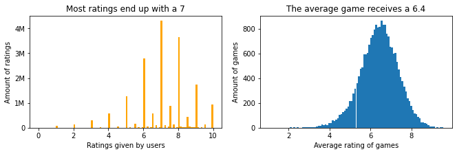
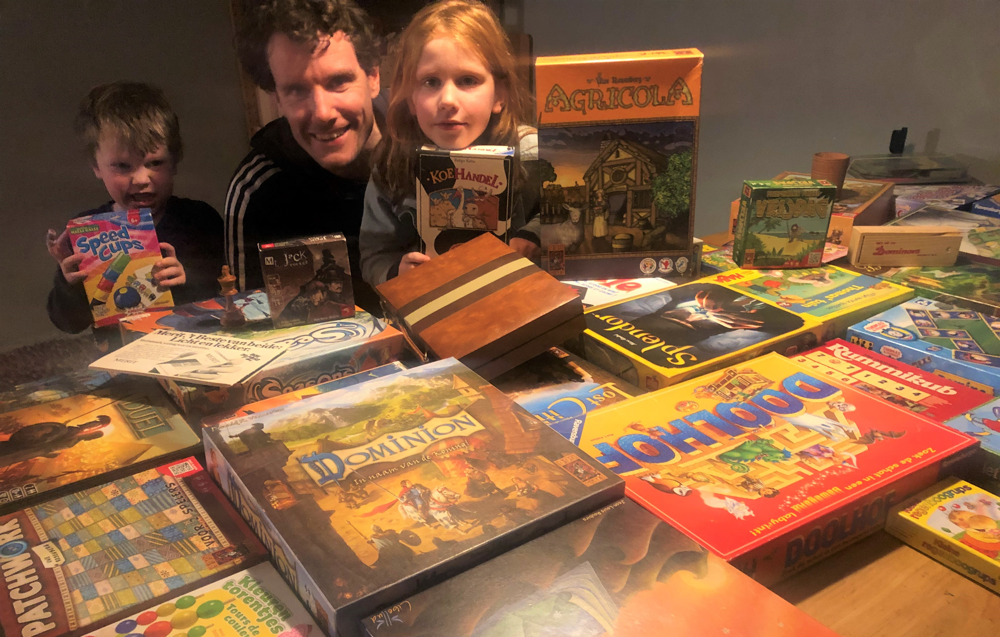
UPDATE: I’ve launched BoardGameFinder where you can find and explore games based on similarity. Give it a try!
Do you like board games? If you do, you may wonder what other great games are out there. I admit that it’s a bit of a guilty pleasure of mine. Many people turn to BoardGameGeek (BGG). This is a great site with many users rating games. I used the BGG API to gather information about: * 410K users rating 19M games * Information on 22K games, such as game type, complexity, minimum age, game duration etc
The key insights from this dataset are: * New games receive higher ratings * More complex games receive higher ratings * Less active users give higher ratings
In this post we take a deeper look into these insights and explore alternative ways of ranking the best games.
Let’s dive in!
The users and ratings
Users give ratings that are often rounded: they give a 7 instead of a 7.23, that’s why you see the spikes on the leftmost chart. Around 4 million reviews end up with a 7.
Looking at the games, we see a nice normal distribution.
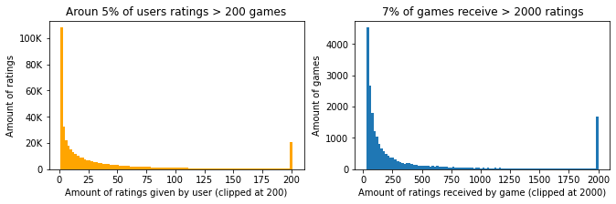
- 19% of users only leave 1 rating. Together they only account for 0.5% of all ratings
- 5% of users (20k) rating >200 games. Together they account for 27% of all ratings
- 44% of games receive <100 ratings. However, these ratings only account of 6% of all ratings.
- 7% of games have >2000 ratings. Together they account for 39% of all ratings.
| user | count | average | |
|---|---|---|---|
| 1 | oldgoat3769967 | 6471 | 6.185752 |
| 2 | warta | 6289 | 7.230800 |
| 3 | leffe dubbel | 6068 | 5.937541 |
| 4 | TomVasel | 5672 | 6.401869 |
| 5 | Doel | 5131 | 7.496200 |
| Name | count | average | |
|---|---|---|---|
| 1 | Pandemic | 108971 | 7.594996 |
| 2 | Carcassonne | 108881 | 7.416162 |
| 3 | Catan | 108195 | 7.133179 |
| 4 | 7 Wonders | 90110 | 7.733539 |
| 5 | Dominion | 81623 | 7.607675 |
Check out the insane number of ratings by oldgoat. And 3 games so close to each other with >100K ratings!
Developments over the years
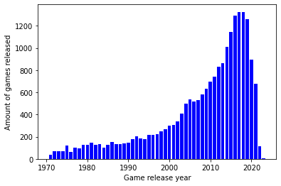
There has been incredible growth in the amount of boardgames being released. It does appears to slow down, although many games are for some mysterious reason added a couple of years after they have been released. Therefore the steep drop after 2020 is a bit misleading.
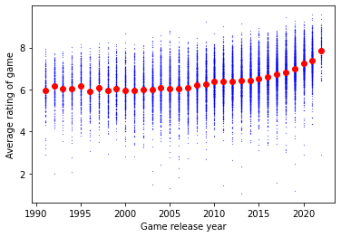
Are games being rated higher? After 2005 it seems so! Are games nowadays just better or is there a tendency to rate new games higher? Now luckily I’ve composed this dataset already twice in the past, we can make good use of this:
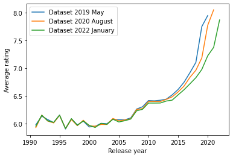
My conclusion would be that it’s a mix of improved quality and hype: * Scores have been climbing since 2005. There is a rough consensus that boardgames have improved in quality. * As you see the 3 snapshots diverge around 2015. This is a ‘hype’ effect, where the early adopters score a new/upcoming games higher. For any year, the blue line (the ratings from the dataset in 2019) scores highest, after the orange (2020) and lowest in the most recent version of the dataset (2022). Games from 2020 where rated with 7.8 in 2020, but two years later that has dropped to 7.2 and now games from 2022 are rated with 7.8! When games are about 5 years old the ‘hype’ effect is more or less gone and games reach a stable score (around 2014 there is no difference anymore).
Edit: some BGG users are pointing out it may also have to do with users getting more selective in which games they play
Complexity of games
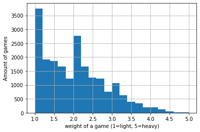
BGG has a weight metric, which means how complex a game is. To get a feel what a number means, here some examples: * Monopoly: 1.3 * Catan: 2.3 * Chess: 3.7
Most of the games have a fairly low weight.
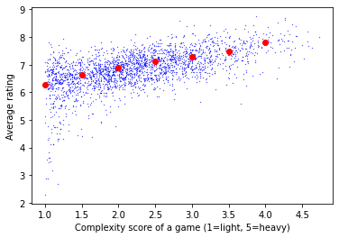
There is a relation between the complexity of the game and the score. More complex games get higher scores, it’s almost a 1 point difference between a game with weight 1 and 5! Are heavy games really ‘better’ than ‘light’ games?
Are active users more critical?
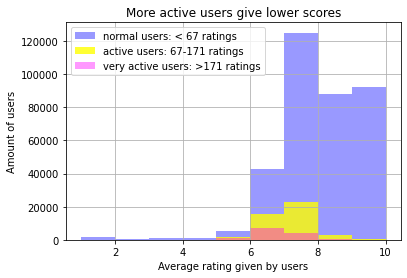
Here you see the average rating that different user groups are giving. I’ve split the population in 3 parts that all account for 33% of the ratings. The very active group gives lower scores (6.9 avg) compared to the active users (7.2 avg) and the normal users (8.1 avg). The very active users only make up of 6% the population (note it’s a small area), they do give out 33% of the ratings!
Are normal users less critical or just reviewing better quality games?
It’s notable that 11% of all users give only 10 ratings, which accounts for 0.5% of all ratings. You can make a case for filtering these ratings out, since they don’t distinguish games. Although it could also be users only rating their favorites.
Some of the games are rated by many users that have only rated a single game with a 10. A good example of such a game is Goblin Grapple, but there are around 100 games where this occurs.
Edit: as pointed out on reddit these single review users could be playtesters or people that just tried that single game.
What is the best game?
While doing this project so many ideas came to mind on how an alternative ranking could be defined: * Excluding ratings given by inactive users (I took <=10 as threshold) * Excluding games that have received ‘few’ ratings (I took <= 1000) * Accounting for the complexity bonus, so that lighter games end up higher.
Other ideas: * Account for the release year. This approach I abandoned, since some new games are truly better. The only thing you want to account for is removing the ‘hype’ effect. I did this by excluding games after 2017 from the analysis. * Including ratings with a comment, since these people are more strongly opinionated. It did not differ much. * Training a model that takes the average user rating into account, to account for people consistently rating high or low.
Let me show you some of the outcomes
| name | avg_rating | yearpublished | averageweight | |
|---|---|---|---|---|
| 1 | Gloomhaven | 8.64 | 2017 | 3.87 |
| 2 | Twilight Imperium: Fourth Edition | 8.59 | 2017 | 4.26 |
| 3 | Pandemic Legacy: Season 1 | 8.56 | 2015 | 2.83 |
| 4 | War of the Ring: Second Edition | 8.45 | 2012 | 4.17 |
| 5 | Gaia Project | 8.43 | 2017 | 4.37 |
| 6 | Star Wars: Rebellion | 8.38 | 2016 | 3.73 |
| 7 | Terraforming Mars | 8.36 | 2016 | 3.24 |
| 8 | Too Many Bones | 8.36 | 2017 | 3.84 |
| 9 | Through the Ages: A New Story of Civilization | 8.35 | 2015 | 4.41 |
| 10 | Aeon's End: War Eternal | 8.34 | 2017 | 2.93 |
This corresponds more or less to the top games listed on BGG. Note from ‘averageweight’ that these are all pretty heavy games. Also 2017 appears 5 times.
But I don’t have time to play games that are very complex and take many hours! So let’s account for the complexity, such that great lighter games will pop up more. I trained a tree based model with a r2 of 0.3. It’s only 0.3, but that does mean that 30% of the variation in the rating is explained by the complexity!
Best games with complexity taken into account
I trained a model that tries to predict the rating of a game based on it’s complexity. What the model cannot explain by complexity (so-called residuals) is more or less the quality of the game without the complexity bias. I’ve taken 1000 reviews as a minimum for the game to be included. That is pretty harsh (only leaves ~15% of the games), but I wanted to be able to recognize some games. This results in the following top 10:
| name | residual | average | yearpublished | averageweight | |
|---|---|---|---|---|---|
| 1 | Crokinole | 1.75 | 7.95 | 1876 | 1.25 |
| 2 | Monikers | 1.61 | 7.80 | 2015 | 1.06 |
| 3 | Telestrations: 12 Player Party Pack | 1.56 | 7.75 | 2011 | 1.07 |
| 4 | Time's Up! Title Recall! | 1.51 | 7.71 | 2008 | 1.19 |
| 5 | KLASK | 1.45 | 7.64 | 2014 | 1.08 |
| 6 | Pandemic Legacy: Season 1 | 1.42 | 8.59 | 2015 | 2.83 |
| 7 | Escape the Dark Castle | 1.32 | 7.51 | 2017 | 1.23 |
| 8 | Time's Up! Edición Amarilla | 1.30 | 7.49 | 2008 | 1.11 |
| 9 | Eat Poop You Cat | 1.26 | 7.45 | 0 | 1.11 |
| 10 | Mythic Battles: Pantheon | 1.26 | 8.43 | 2017 | 3.03 |
This list is ordered by residual, the part that the model could not explain. There are a lot of dexterity and party games in the top, which are of course light games. Pandemic Legacy scores high even while being fairly complex. I was a bit shaken by Eat Poop You Cat, but it seems a nice game you can play with pen and paper. If we filter out the easiest games we get the following list:
| name | residual | average | yearpublished | averageweight | |
|---|---|---|---|---|---|
| 1 | Pandemic Legacy: Season 1 | 1.42 | 8.59 | 2015 | 2.83 |
| 2 | Mythic Battles: Pantheon | 1.26 | 8.43 | 2017 | 3.03 |
| 3 | Gloomhaven | 1.24 | 8.74 | 2017 | 3.87 |
| 4 | Star Realms: Colony Wars | 1.22 | 7.85 | 2015 | 1.90 |
| 5 | Azul | 1.21 | 7.80 | 2017 | 1.76 |
| 6 | Aeon's End: War Eternal | 1.21 | 8.38 | 2017 | 2.93 |
| 7 | 7 Wonders Duel | 1.19 | 8.11 | 2015 | 2.22 |
| 8 | Twilight Imperium: Fourth Edition | 1.18 | 8.68 | 2017 | 4.26 |
| 9 | Patchwork | 1.14 | 7.64 | 2014 | 1.62 |
| 10 | Kingdom Death: Monster | 1.11 | 8.61 | 2015 | 4.26 |
We do see some heavy games popping back, but there are lighter games as well. I know Pandemic, Azul, 7 Wonders Duel and Patchwork to be great games!
Wrapping things up with a complete model
Finally I’ve also trained a model on multiple variables, e.g. the type of game and the year of publication. This model is able to account for about 50% of the variation between average game scores. I think this is a pretty good result. Below you see the impact of the most important variables.
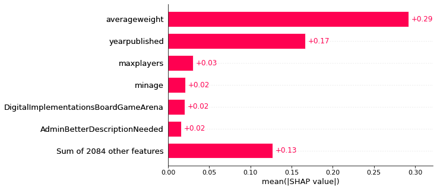
As expected the weight/complexity and year of publication have most impact on the rating of a game. Together they roughly impact the score by 0.5 for each game. In addition certain categories also have a small impact on the score. In more detail:
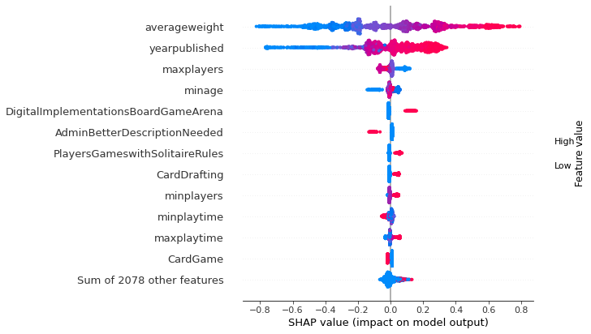
This is what people talk about with ‘explainable AI’. All the dots represent games, and if they are on the right side it means the impact on the model was positive (a higher rating). The color is about the feature value, where blue means low and red high.
What works best is saying it out loud: ‘if averageweight is high (red), then the impact is positive and the game will receive higher ratings. For ’AdminBetterDescriptionNeeded’ that means that if the game description is lacking, the game will receive lower ratings.
So if you want to receive high ratings with your game, just make sure to make it complex, two players simulated wargame that can be played solitaire with miniatures and online as well. You already get the hype effect for free 😋
We can also inspect how to model came to it’s prediction for a single game. Below I took Chess as an example:
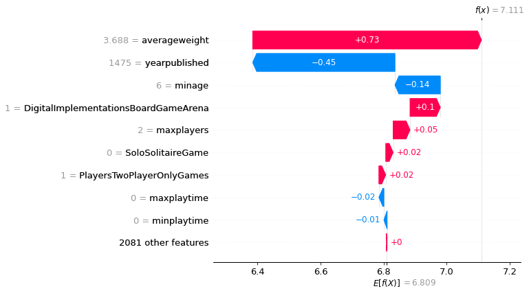
The average game receives a 6.8 (see the bottom value), then there are all kind of effects going on, with the red bars pushing the prediction higher, the blue ones lower. Chess is quite complex which pushes the prediction up, but it’s also old. Apparently the model also doesn’t like you need to be 6 to play it. All these effects together make the model arrive at a prediction of 7.1.
Summarizing, we have found that there are multiple features that influence the rating of a game. Also we have explored alternatives of ranking the best games. Finally we put everything together with an explainable machine learning model. Hope you enjoyed this dive into the data behind board games!
There are also interesting threads on Reddit and BGG discussing this analysis.
Tip
Note
The data is of course owned by BoardGameGeek. If you want to play with the data, I’ve made it into a Kaggle Dataset.